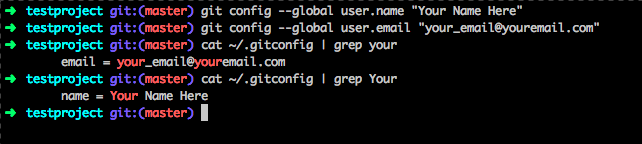
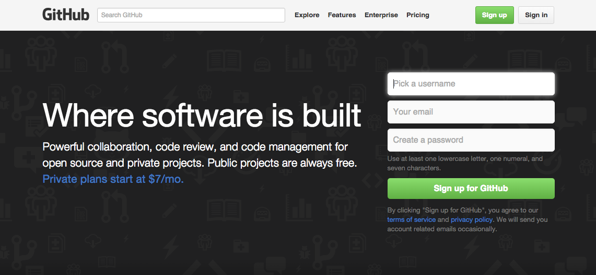
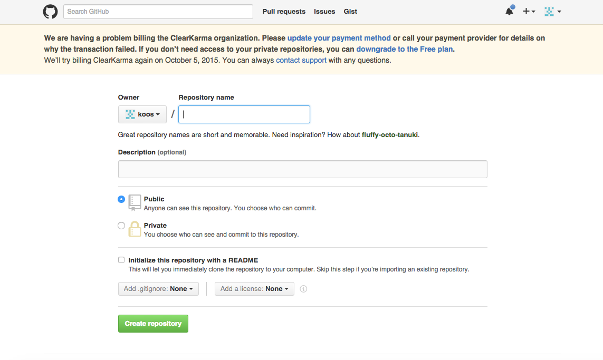
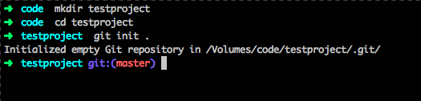
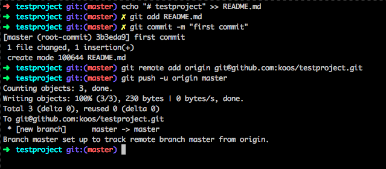
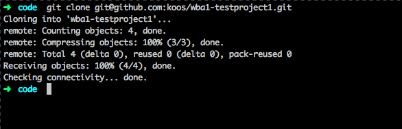
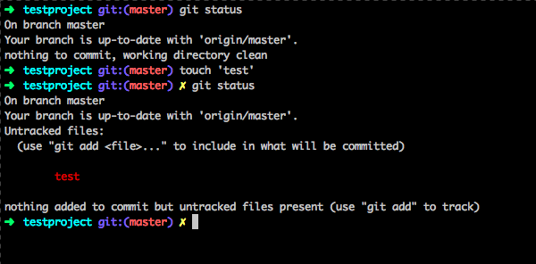
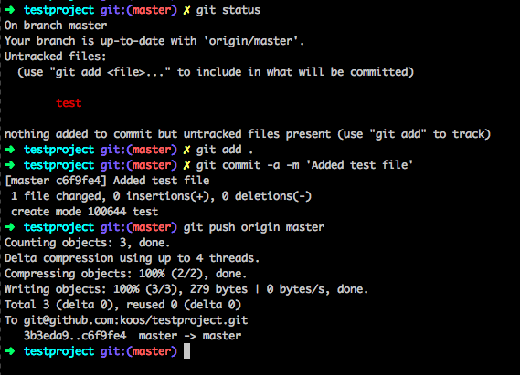
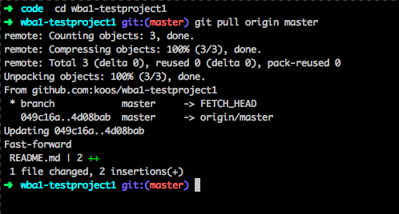

08. Oktober 2015
Studiengang Medieninformatik an der Fachhochschule Köln
Campus Gummersbach
M.Sc. Jan Kus
Hands-on
git configgit initgit config / git clonegit status / git add / git commitgit push / git pullKonfiguration von git auf dem lokalen Rechner. Somit wird ~/.gitconfig erstellt.
git config --global user.name "Your Name Here"
git config --global user.email "your_email@youremail.com"

Wie erstelle ich mir einen Github Account?
Bitte http://github.com besuchen und wir gehen diese Schritte gemeinsam durch.

Wie erstelle ich ein Repository auf Github?
Bitte https://github.com/new besuchen und wir gehen diese Schritte gemeinsam durch.

git initmkdir testprojectcd testprojectgit init .
git push, git add, git commit, git remotecd testprojectecho "# testproject" >> README.mdgit add README.mdgit commit -m "first commit"git remote add origin git@github.com:[MEIN GITHUB USERNAME]/testproject.gitgit push -u origin master
git clonegit clone git@github.com:koos/wba1-testproject1.git
git statuscd testprojecttocuh testgit status
git pushcd testprojectgit add .git commit -a -m "Added test file"git push origin master
git pullcd wba1-testproject1git pull origin master
git helpHilft.